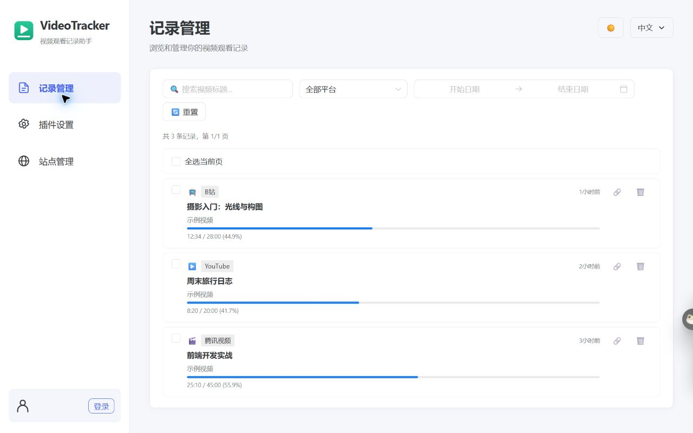
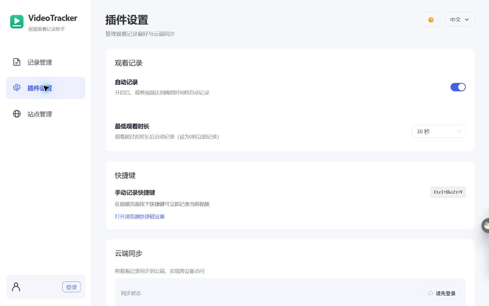
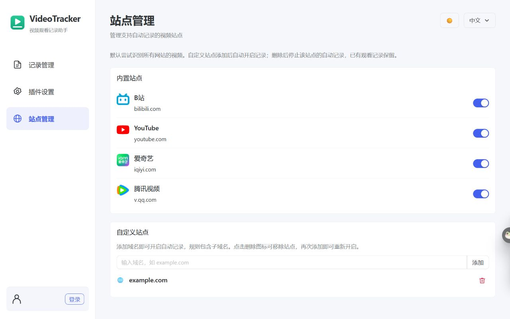
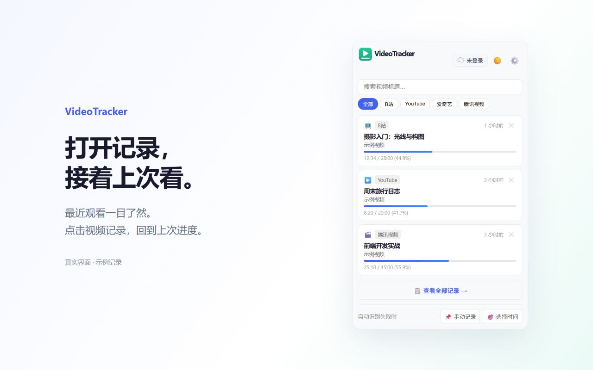
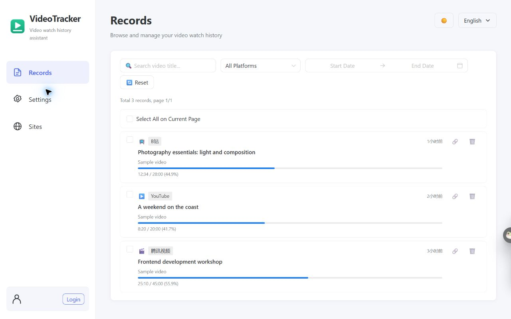
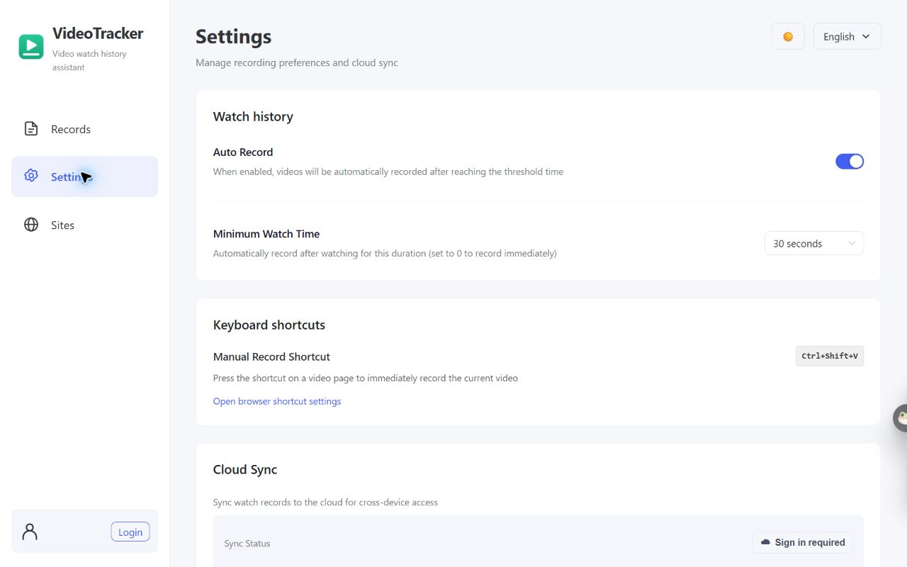
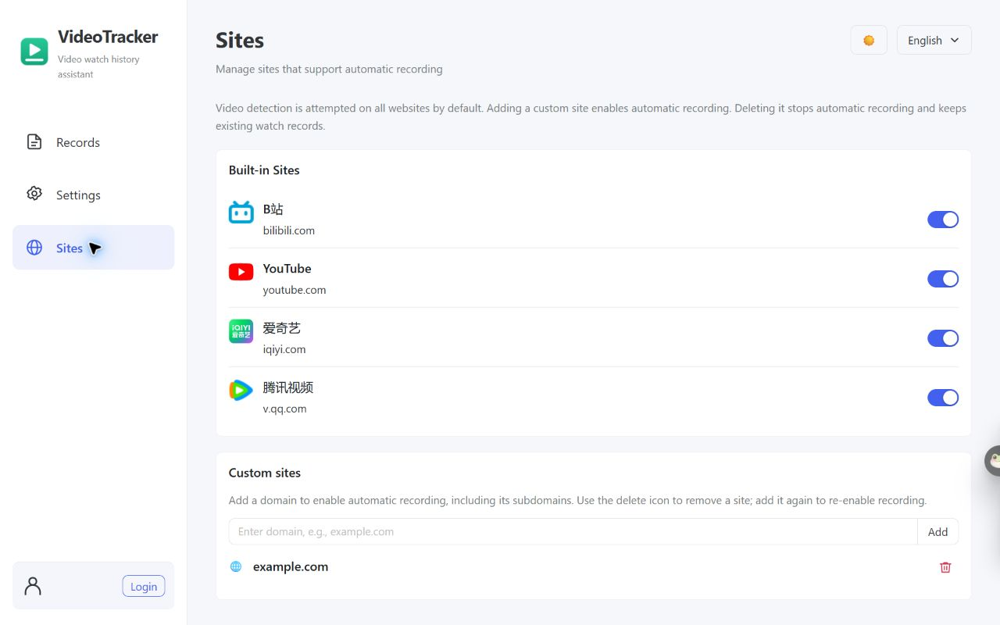
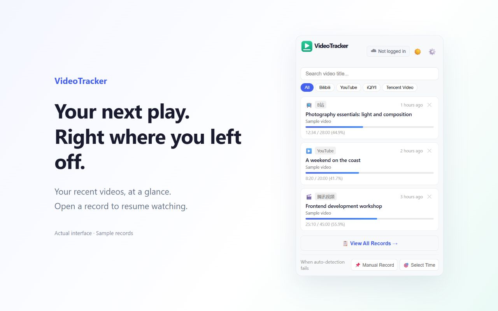

本地资料已准备，尚未上传或提交审核。商店后台不支持当前浏览器自动操作。
下载插件 ZIP · 提交步骤与待办 · 完整权限与隐私说明 · 文件校验及验证结果
记录 B站、YouTube 等视频网站的观看进度，一键继续观看。默认本地存储，无需账号；可选端到端加密云同步。
0.0.12：自定义站点添加即启用，删除停止自动记录并保留记录；优化记录页布局、中英文组件与日期显示；修正快捷键权限声明。




Save and resume video progress across sites. Local storage, no account required. Optional end-to-end encrypted cloud sync.
0.0.12: Adding a custom site enables recording; deleting it stops automatic recording and preserves records. Improved layout and locale handling. Fixed the shortcut permission declaration.



